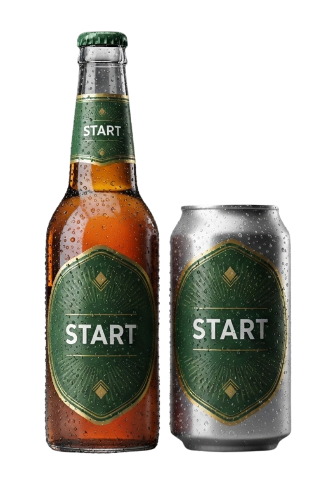

A Cerveja pra começar a noite
Energia, estilo e ritmo para o começo perfeito. Premium acessível para jovens que vivem a noite.
Cerveja artesanal criada para o público jovem de 18-28 anos. Perfeita para festas, baladas e encontros sociais. Aceite a primeira bebida da noite, transmitindo expectativa, estilo e experiência premium acessível.
Produzida com ingredientes selecionados e processo artesanal rigoroso, Start é sinônimo de qualidade e vibe noturna.

A cerveja tem o malte como principal ingrediente, sendo ele a principal fonte de açúcar fermentável.
Os ácidos e os óleos do lúpulo são os principais responsáveis pelo amargor e aroma da cerveja.
As leveduras são responsáveis pela fermentação alcoólica.
Fragmentação de materiais sólidos para reduzir o tamanho das partículas.
→Mistura do malte com água promovendo a ação das enzimas: α-amilase e β-amilase.
→Esterilização do mosto, e remoção de compostos voláteis indesejáveis.
Processo de conversão dos açúcares em etanol .
→Redução de compostos indesejáveis, estabilização do sabor e aroma.
→Prevenir contaminação microbiológica, e evitar oxidação.
Junte-se à revolução das cervejas artesanais.